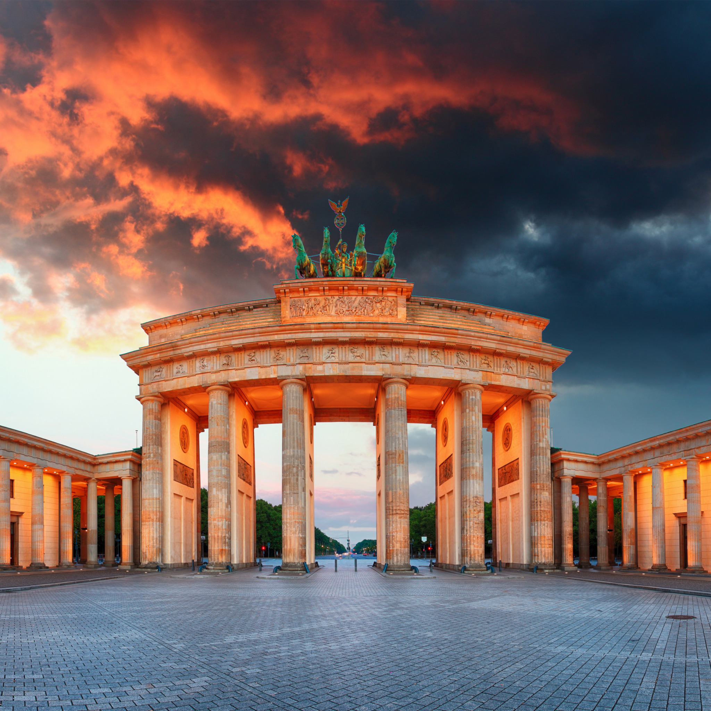
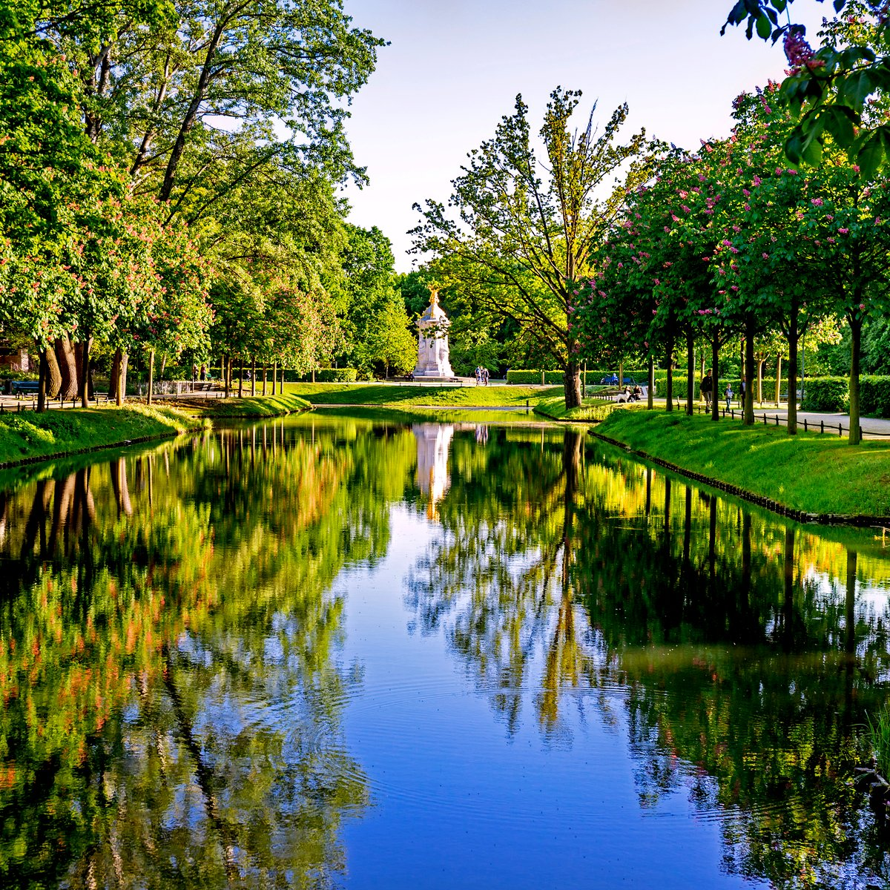
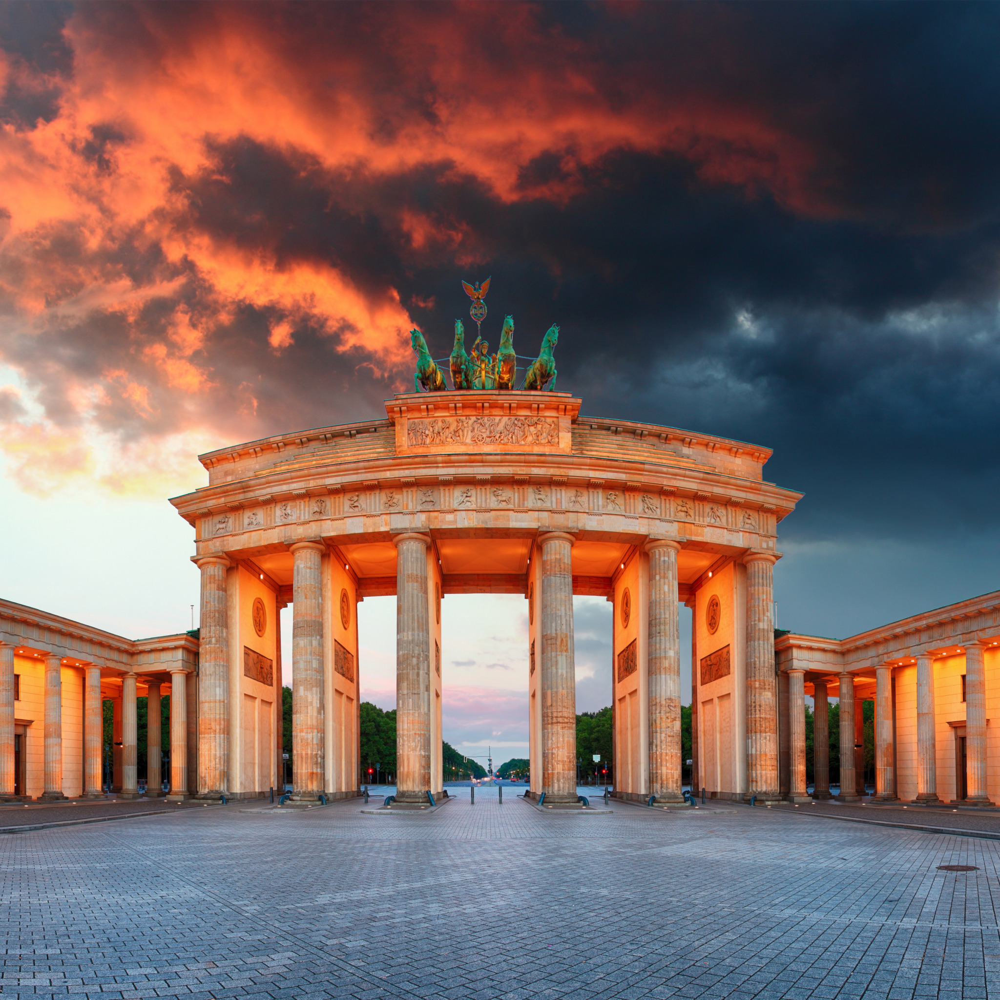
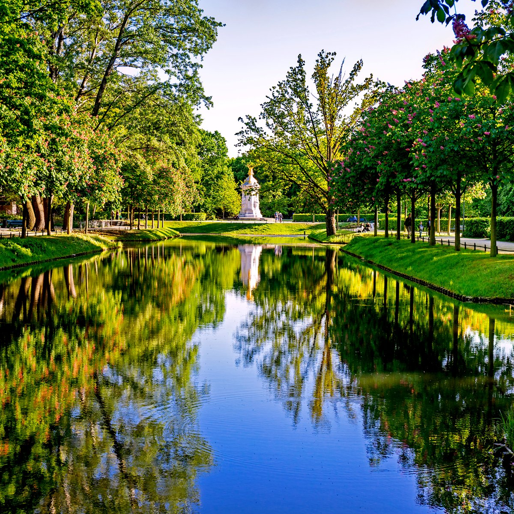

Исторические сведения
Берлин — столица и крупнейший город Германии, первый по населению и четвёртый по площади город Евросоюза. Около 1200 года на месте современного Берлина располагались два торговых поселения — Кёлльн и Берлин. Точная дата получения ими городских прав неизвестна. Городские права Кёлльна впервые упоминаются в 1237 году, городские права Берлина — в 1244 году. В 1307 году города объединились и образовали общую городскую управу. В 1400 году население объединённого Берлина составляло 8000 человек. Историческое название «Кёлльн» нашло своё отражение в названии берлинского района Нойкёльн.
 


